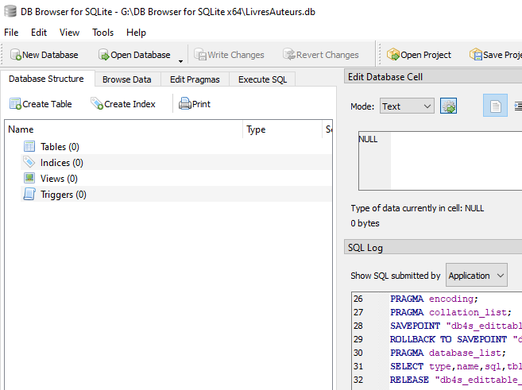
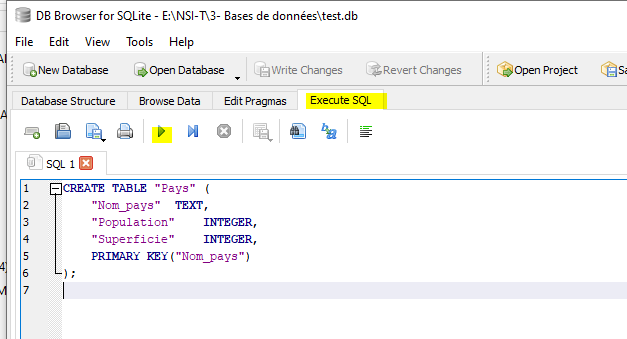
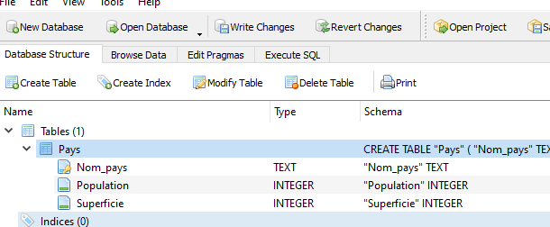
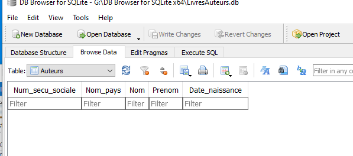
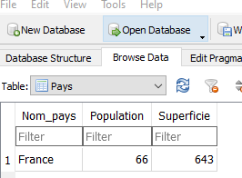
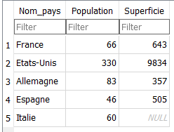

Le langage SQL
Cours
L’interaction avec un SGBD se fait dans un language informatique dédié appelé Structured Query Language ou SQL.
SQL est un langage déclaratif, il n'est donc pas a proprement parlé un langage de programmation, mais plutôt une interface standard pour accéder aux bases de données.
Commençons par créer une nouvelle base de données (menu « New Database ») enregistrée sous le nom « LivresAuteurs.db ». La base de données vide s’ouvre :

Création des tables, mise à jour et suppression des tables
Créons une première table qui représente la relation: Pays(Nom_pays, Population, Superficie).
Cours
La commande SQL pour créer une table est :

Entrons la commande SQL suivante dans l’onglet « Execute SQL » :
À noter :
Le langage SQL n’est pas sensible à la casse, mais les requêtes SQL sont écrites en majuscule par convention. Les commandes SQL sont séparées par des point-virgules «
;»
Puis le bouton «run»  pour exécuter la commande :
pour exécuter la commande :

La table créée apparaît dans l'onglet « Database Structure » avec ses colonnes.
Noter l’icone devant Nom_pays indiquant la clé primaire.
SQLite permet de générer automatiquement les requêtes pour créer les tables suivantes avec le menu « Create Table ».
Maintenant que la table Pays a été créée, il est possible d'ajouter la table Auteur(Num_auteur, #Nom_pays, Nom, Prenom, Date_naissance). Il n'était pas possible de créer la table Auteur avant Pays car elle contient une clé étrangère (Nom_ Pays) qui fait référence à Pays (contrainte d'intégrité référentielle).
Cours
Contrainte d'intégrité référentielle : Pour créer une nouvelle table contenant une clé étrangère en référence à une autre table, il faut que cette autre table soit créée avant la nouvelle table.
-
Saisir le nom de la table (
Auteur), les noms colonnes (Num_auteur,Nom_pays,Nom,Prenom,Date_naissance), leur domaine respectifs (INTEGER,TEXT,TEXT,TEXT,NUMERIC). -
Indiquer que la colonne
Nomest une clé primaire en cliquant la case «PK» (pour Primary Key). Il est aussi possible de cliquer sur «NN» pour Not Null et «U» pour Unique. -
Indiquer que la colonne
Nom_paysest une clé étrangère dans «Foreign Key» en indiquant la référence vers l'attributNom_paysde la tablePays.
A noter :
Les domaines proposés par SQLite (dépendent du SGBD) sont INTEGER pour les entiers, TEXT pour les chaînes de caractères, BLOB pour binary large object, REAL pour le flottants et enfin NUMERIC qui convertit en l’un des types précédents en fonction de la valeur donnée.
La commande SQL est générée automatiquement :
CREATE TABLE "Auteur" (
"Num_auteur" INTEGER NOT NULL UNIQUE,
"Nom_pays" TEXT,
"Nom" TEXT,
"Prenom" TEXT,
"Date_naissance" NUMERIC,
FOREIGN KEY("Nom_pays") REFERENCES "Pays"("Nom_pays"),
PRIMARY KEY("Num_auteur")
);
De la même façon, créons la table Livres(No_ISBN, Titre, Annee), par exemple en précisant le domaine avec une contrainte utilisateur supplémentaire (menu « Check » ) afin que l’année soit un entier entre 1900 et 2100.
CREATE TABLE "Livre" (
"Num_ISBN" TEXT,
"Titre" TEXT,
"Editeur" TEXT,
"Annee" INTEGER NOT NULL CHECK("Annee" BETWEEN 1900 AND 2100),
PRIMARY KEY("Num_ISBN")
);
Finalement ajoutons la table Ecrit(#Num_ISBN, #Num_auteur) :
CREATE TABLE "Ecrit" (
"Num_ISBN" TEXT,
"Num_auteur" INTEGER,
FOREIGN KEY("Num_auteur") REFERENCES "Auteur"("Num_auteur"),
FOREIGN KEY("Num_ISBN") REFERENCES "Livre"("Num_ISBN"),
PRIMARY KEY("Num_auteur","Num_ISBN")
);
Cours
La commande SQL CREATE TABLE permet de renseigner les clés primaires et étrangères d'uen table :
Les commandes ALTER TABLE et DROP TABLE permettent de modifier ou supprimer une table.
- Admettons qu’on veuille changer la base de données pour ne plus enregistrer les pays :
- Pour le chapitre suivant, on va supprimer la colonne Date_naissance :
Le schéma de la base de données complet a été créé, il peut être enregistré (menu « File/Save All »).
Insérer des données avec INSERT
Le schéma de notre base de données a maintenant été créée dans le SGBD, mais à ce stade elle est complétement "vide", elle ne contient aucune données. Autrement dit les tables et les colonnes sont bien renseignées mais il n'y a aucune ligne. C'est ce que l'on observe dans l’onglet « Browse Data ».

La mise à jour la base de données se fait à travers le SGBD par le biais de commandes SQL. Le SGBD garantit que les mises à jour respectent le schéma et les contraintes d'intégrité de la base de données.
Cours
La commande SQL pour insérer des données est :
À noter :
Les valeurs doivent être dans l'ordre des attributs correspondant dans la table.
Entrons la commande SQL dans l’onglet « Execute SQL » :
et observons le résultat dans « Browse Data » :

Il est aussi possible d'utiliser INSERT INTO pour insérer plusieurs lignes en même temps :
INSERT INTO en précisant les colonnes, par exemple pour les renseigner dans un ordre différent :
ou de ne renseigner que certaines colonnes :

Observons ce qui se passe si on essaie d’insérer un doublon, c’est-à-dire une ligne avec une clé primaire déjà existante, ici Nom_pays("France") :
Le SGBD génère une erreur pour violation de la contrainte d’entité :
Execution finished with errors.
Result: UNIQUE constraint failed: Pays.Nom_pays
At line 1:
INSERT INTO Pays VALUES ("France", 67, 640);
Cours
Contrainte d’entité : Il n'est pas possible d'insérer deux lignes avec la même valeur de clé primaire (ou la même combinaison de clés primaires) dans une table.
Insérons maintenant un premier auteur :
et un livre :
INSERT INTO Livre VALUES ("978-2228887359","A la dure II", "Payot", 1993);
INSERT INTO Ecrit VALUES ("978-2228887359", 0);
Le SGBD teste toutes les contraintes d’intégrité. Par exemple si la valeur de la colonne Annee d’un livre n’est pas compris entre 1900 et 2100 :
ou si une clé étrangère n’existe pas :
Cours
Contrainte d’intégrité référentielle : Il n'est pas possible d'insérer une ligne dans une table avec une valeur de clé étrangère qui n’existe pas dans la table à laquelle elle fait référence.
Pour la suite du chapitre, importons des données plus complètes (25 lignes de Pays, 119 auteurs et 129 livres) dans la base de données à partir du fichier « LivresAuteurs.sql ».
Mettre à jour des données avec UPDATE
Admettons que la population de la ligne France a changée et qu'elle doit être mise à jour dans la base de données :
Cours
La commande SQL pour mettre à jour des données est :
 Il ne faut pas oublier de préciser la ligne ou les lignes à modifier avec la clause
Il ne faut pas oublier de préciser la ligne ou les lignes à modifier avec la clause WHERE au rique de modifier toutes les lignes de la table avec la nouvelle_valeur.
Exercice corrigé
Certains livres de la base de données ont pour éditeur LGF/ Le Livre de Poche et d’autres Le Livre de Poche. Quelle commande permet de tous les réunir sous un même nom d’éditeur ?
Réponse
UPDATE Livre SET Editeur = "Le Livre de Poche" WHERE Editeur = "LGF/Le Livre de Poche";
Supprimer des données avec DELETE
Cours
La commande SQL pour supprimer des données est :
Imaginons que l’on veuille supprimer un livre ainsi que son auteur s’il n’a pas écrit d’autres livres dans la base de données. Par exemple le livre Akira dont l’ISBN est 978-2723428262.
Commençons par supprimer ce livre dans la table Livre:
Cette commande renvoie une erreur :
et c'est la même chose si on essaye de supprimer cet auteur de la table Auteur :
en effet, ces deux commandes violent la contrainte d'intégrité référentielle sur la table Ecrit.
Il faut procéder dans l’ordre et commencer par supprimer les lignes des autres tables qui font référence à ce livre ou à cet auteur, ici il y a une ligne dans la table Ecrit qui leur fait référence :
DELETE FROM Ecrit WHERE Num_ISBN = '978-2723428262';
DELETE FROM Livre WHERE Num_ISBN = '978-2723428262';
DELETE FROM Auteur WHERE Num_auteur = 2;
Cours
Contrainte d’intégrité référentielle : Il n'est pas possible de supprimer une ligne dans une table si elle est référencée par la clé étrangère d'une autre table.
Sélectionner des données avec SELECT
Une façon simple de connaître tous les livres de la base de données est la commande (ou requête) SQL suivante :
Elle affiche toute la table. Pour voir seulement certaines colonnes, par exemple les titres et éditeurs des livres, il faut écrire la requête :
Cours
La commande (ou requête) SQL pour sélectionner des données est :
ou
Il est aussi possible de changer l'affichage du nom des colonnes en leur donnant un alias avec AS
avec WHERE
Cours
La clause WHERE suivi d’une condition permet de restreindre le champ de recherche d'une requête ::
Recherchons par exemple les livres publiés chez l'éditeur "J'ai Lu" :
ou tous les livres publiés après 1990 :
il n'est pas possible de mettre plusieurs clauses WHERE dans une requête, pour des requêtes plus compliquées il faut uiliser les opérateurs booléens AND et OR, par exemple les livres publiés entre 1990 et 2000, ou les livres publiés en 1990 ou 2000 :
SELECT * FROM Livre WHERE Annee >= 1990 AND Annee <= 2000;
SELECT * FROM Livre WHERE Annee = 1990 OR Annee = 2000;
De nombreuses autres possibilités existent pour affiner les requêtes, par exemple utiliser des clauses "floues" avec LIKE, NOT LIKE et le symbole % ou encore IN (hors programme):
SELECT * FROM Livre WHERE Titre LIKE "%Astérix%";
SELECT * FROM Livre WHERE Num_ISBN NOT LIKE '978%';
SELECT * FROM Livre WHERE Editeur IN ("J'ai Lu", "Flammarion");
avec DISTINCT et ORDER BY
Recherchons tous les éditeurs de la table Livre :
DISTINCT :
De la même façon, ORDER BY permet de trier les résultats d'une requête selon une colonne :
Le tri se fait par défaut en ordre croissant, mais il est possible de préciser l'ordre voulu, ASC pour l'ordre croissant ou DESC pour l'ordre décroissant :
Cours
La clause DISTINCT permet d'éviter le répétition dans une requête :
La clause ORDER BY permet de trier le resultat d'une requête en ordre croissant (ASC par défaut) ou decroissant (DESC) :
avec des fonctions d'aggrégation MIN(), MAX(), COUNT(), SUM() et AVG()
Cours
Les fonctions d’agrégation MIN(), MAX(), COUNT(), SUM() et AVG() permettent d’effectuer des opérations statistiques dans une requête :
En voici quelques exemples :
SELECT COUNT(Titre) FROM Livre;
SELECT COUNT(Editeur) FROM Livre;
SELECT MIN(Population) AS Minimum FROM Pays;
SELECT MIN(Population) AS Min, MAX(Population) as Max, AVG(Population) AS Moyenne FROM Pays;
GROUP BY (hors programme) permet de regrouper certains résultats ensembles :
SELECT Editeur, COUNT(Editeur) FROM Livre GROUP BY Editeur;
SELECT Nom_pays, COUNT(Nom_pays) FROM Auteur GROUP BY Nom_pays;
Requêtes imbriquées (ou sous-requêtes)
Une requête du typeSELECT… FROM … renvoie une table comme résultat. Cette table peut tout à fait être utilisée pour écrire de nouvelles requêtes.
Comment trouver le nom du pays qui a la plus petite population ?
La plus petite population parmi la table Pays est obtenue par :
SQLite est particulièrment flexible avec les fonctions d'aggregation et permettait d’écrire directement1 :
Jointures
La requête SELECT * FROM Ecrit nous renvoie la table des Num_auteur avec les Num_ISBN correspondant, mais comment afficher le nom et prénom de l’auteur, plutôt que son numéro ?
Il faut croiser les informations provenant des tables Ecrit et Auteur ensembles. C’est une jointure.


Cours
Pour sélectionner des données à travers plusieurs tables, il faut réaliser une jointure entre les tables avec JOIN... ON...
Ce qui donne dans notre exemple2 :
SELECT Ecrit.Num_ISBN, Auteur.Nom, Auteur.Prenom
FROM Ecrit
JOIN Auteur
ON Ecrit.Num_auteur = Auteur.Num_auteur;
Quand il n’y a pas d’ambiguïté sur les noms de colonne entre les deux tables, par exemple ici Num_ISBN n’apparaît que dans Ecrit et Nom et Prenom que dans Auteur, il est possible d’écrire plus simplement :
Dans le cas où les noms de tables sont utilisés, l’utilisation des alias améliore la lisibilité :
Il est aussi possible d'ajouter des clauses habituelles, par exemple pour n'avoir que les auteurs français :
SELECT Ecrit.Num_ISBN, Auteur.Nom, Auteur.Prenom
FROM Ecrit
JOIN Auteur
ON Ecrit.Num_auteur = Auteur.Num_auteur
WHERE Auteur.Nom_pays = "France";
Enfin, les noms des livres et de leurs auteurs de la table Ecrit s'obtiennent par une double jointure :
SELECT L.Titre, A.Nom, A.Prenom
FROM Ecrit AS E
JOIN Auteur AS A
ON E.Num_auteur = A.Num_auteur
JOIN Livre AS L
ON E.Num_ISBN = L.Num_ISBN;
Autres types de jointures (hors programme)
La jointure avec JOIN, qui peut aussi s'écrire INNER JOIN, réunit seulement les lignes qui apparaissent dans les deux tables :


L’ordre des tables n’a donc pas d’importance. Les deux requêtes suivantes sont équivalentes :
Le résultat est le même.
Mais il existe aussi d’autres types de jointures, LEFT JOIN, RIGHT JOIN, FULL OUTER JOIN (hors programme) qui permettent d’obtenir des résultats différents.


Résumé des requêtes SQL
Les commandes SQL suivantes sont à connaître par cœur :
| Action | Commande SQL |
|---|---|
| Ajouter des lignes dans une table | INSERT INTO nom_tableVALUES (valeur1, valeur2, …); |
| Ajouter des lignes dans une table en précisant les colonnes |
INSERT INTO nom_table(nom_colonne1, nom_colonne2, ...)VALUES (valeur1, valeur2, …); |
| Mettre à jour une ligne | UPDATE nom_tableSET nom_colonne1 = valeur1, nom_colonne2 = valeur2, …WHERE certainesColonnes = certainesValeurs; |
| Supprimer une ligne | DELETE FROM nom_tableWHERE nom_colonne = valeur; |
| Sélectionner toutes les données dans une table | SELECT * FROM nom_table; |
| Sélectionner certaines colonnes | SELECT nom_colonne1, nom_colonne2, ...FROM nom_table |
| Sélectionner certaines lignes avec WHERE |
SELECT ...FROM nom_tableWHERE nom_colonne = valeur |
| Sélectionner sans répétition avec DISTINCT |
SELECT DISTINCT nom_colonneFROM nom_table |
| Sélectionner en triant les lignes avec ORDER BY |
SELECT ...FROM nom_tableORDER BY nom_colonne [DESC] |
Sélectionner avec les fonctions d'aggregatMIN(), MAX(), COUNT(), SUM(), AVG() |
SELECT MIN(nom_colonne)FROM nom_table |
| Afficher une jointure entre tables | SELECT nom_table1.nom_col1, nom_table2.nom_col2,FROM nom_table1JOIN nom_table2ON nom_table1.cle1 = nom_table2.cle2 |
-
Voir https://sqlite.org/lang_select.html#bare_columns_in_an_aggregate_query. ↩
-
Noter que
JOINa remplacé l’ancienne syntaxe pour les jointures avecWHERE:SELECT nom_table1.nom_colonne1, nom_table2.nom_colonne2 FROM nom_table1, nom_table2 WHERE nom_table1.cle1 = nom_table2.cle2;Ce qui donnait dans notre exemple :
↩